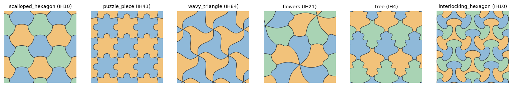
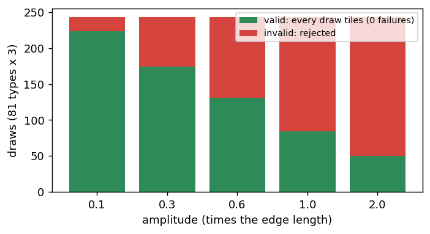
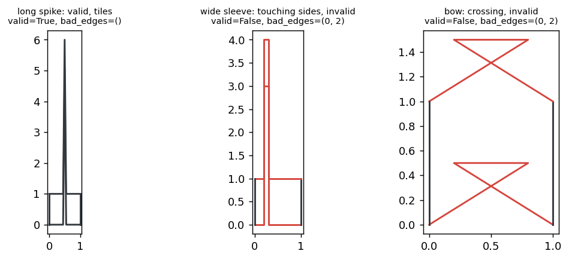
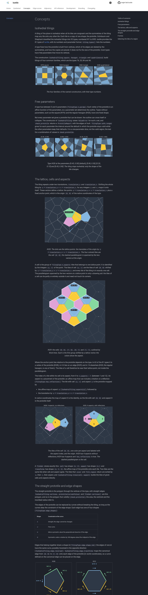
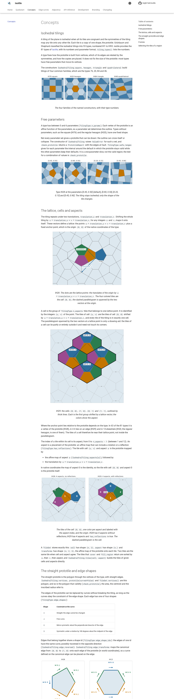
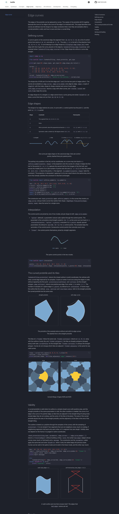
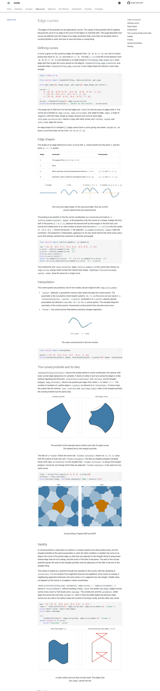

Phase 2 adds edge curves to isotile: EdgeShape, an idempotent index-based enforce_symmetry, spline and linear interpolation, the curved prototile outline and curved tiles, a certified validity rule (simple closed outline with positive area and a clearance of 1e-6 diameter, exact for the curve and independent of the sampling, 1.3 ms for typical curves), presets, versioned JSON serialization with edge_curve_modes, optional matplotlib helpers, an Edge curves docs page with six figures, and 1,640 more tests; CI is green.
fig.py <output dir> draws figures 1 to 3. evidence_fit.py (validity against tiling, 5 amplitudes x 81 types x 3 draws) and evidence_checker.py (the polyline test against GEOS is_valid) are the exploration runs behind the numbers; run them from this directory with uv run --project /home/fakl/isotile-phase2 python evidence_fit.py 0.
edges.py (EdgeShape, enforce_symmetry, is_symmetric, interpolate), curves.py (outline, EdgeInfo, simplicity test, native edge transforms moved out of tiling.py), presets.py, io.py, plot.py.IsohedralTiling takes edge_curves (shape id to control points) and edge_curve_modes; new members edge_curves, edge_curve_modes, edges, with_edge_curves, edge_outlines(), prototile(normalized, curved=True, n_points=None), to_dict, from_dict, save, load, from_preset. with_frame, rotated and scaled keep the curves. TileSet.outlines() and polygons(curved=True); vertices() stays straight.CubicSpline), max(100, 10 m) samples; the samples keep the symmetry; coincident consecutive points count once; linear returns the control points.clearance.py, see below. check_prototile gained edge_curves and edge_curve_modes; neither it nor check_curves takes n_points; the constructor, the parameters setter, from_dict and load raise ValueError and keep the state.straight, bump, dent, wave, s_curve) that are built for a free edge and projected, valid for all 81 types at amplitude 0.04 (at 0.1 they are invalid for types 36, 38, 86 (wave, s_curve) and 39 (bump, dent), re-verified with the certified rule).version, tiling_type, parameters, edge_curves, edge_curve_modes, and frame when it is not the identity; keys sorted by shape id; reads 1.0 and ignores unknown keys.plot_prototile and plot_tiles; matplotlib is imported inside the functions (a test checks import isotile, isotile.plot leaves it unimported).concepts-edges, curves-shapes, curves-modes, curves-prototile, curves-tiling, curves-invalid), CHANGELOG. draw in make_doc_figures.py uses TileSet.outlines(); the existing figures are byte-identical.plot = ["matplotlib>=3.7"], all includes it, matplotlib in the dev group, marker slow.A curved prototile is valid iff (a) the straight prototile is valid, (b) its outline is a simple closed curve with positive area, and (c) parts of the outline that are not directly consecutive are at least 1e-6 * diameter apart (diameter: larger side of the bounding box of the native outline). The first version of the PR tested a polyline through 100 or more samples per curve; that test depends on the sampling and misses features finer than the spacing, so it was replaced.
Algorithm (clearance.py). Linear curves are segments, splines are their cubic pieces (Hermite to Bezier), all placed on the edges with reversal. Pairs of pieces that are not directly consecutive: boxes of the control points grown by tol/2 are compared for all pairs at once (numpy); overlapping pairs are subdivided level by level with de Casteljau (the piece with the larger extent is split) until both deviate at most tol/4 from their chords and do not run backward along them, and the chords are compared as segments. Consecutive pieces get the same test except for the parts that contain the join; pairs whose tangents stay within 135 degrees are graphs over a direction and are accepted at once. A piece whose tangents do not stay within 180 degrees is split in the middle and its halves are tested as consecutive parts, recursively (parts below tol/8 are not split): a hairpin within one piece is valid if its arms keep the clearance, a loop or a crossing is rejected, and a cusp is decided by the same logic (its branches come closer than the clearance, so it is rejected). Each join (polygon vertices and the closing join included) must turn by less than 180 degrees: at a fold-back the two pieces overlap along a stretch, so it stays rejected. The area (Green's theorem on the Beziers) must be positive. While extending the test I found that a piece folding back along a straight line was replaced by its chord and not seen; pieces that run backward along their chord are no longer treated as flat.
| Check | Result |
|---|---|
| Accepted random draws, 81 types, amplitudes 0.1 to 2.0 (seed 0, 3 draws each) | 678 accepted, all covered 1500 random points exactly once; 537 rejected (evidence_fit.py; the counts differ from run to run of the rule because the script draws its sample points from the same generator) |
| Threshold is the clearance (spikes grown until the verdict flips, 3 types, shapely distance of the nearest non-consecutive edges) | 1.000 times 1e-6 * diameter at the last valid and the first invalid length |
Sampled polyline test against certified test, 3 x 1620 random outlines (evidence_checker.py, seeds 0 to 2) | 2702 valid by the sampled test, GEOS on the samples equal to it everywhere. Certified rejects 3 that the sampled test accepts (crossings or near-touches finer than the sample spacing). Certified accepts 1 that the sampled test rejects (a polyline crossing at 100 samples in a sharp turn, gone at 400 samples: sampling artifact). The 6 hairpin draws that the strict version rejected (a piece turning 181 to 210 degrees) are accepted, each covers a region exactly once (3 are tests), and a hairpin draw that also crosses stays rejected |
| Soundness | every accepted outline of 2 x 1215 draws has a simple polyline at 1500 samples (GEOS) |
| Loop of width 1e-3 of the edge (below the spacing of 0.01) | invisible to the sampled test, rejected by the certified test (test) |
| Placement and reversal against tactile | equal for 81 types |
| Long spike (5 tile sizes) on IH41 | valid, 3000 random points covered once |
Timings (bench_curves.txt, bench_curves.py; milliseconds per call, one machine; "check_curves" is the test on built curves, "check_prototile" includes building them, 6 control points per shape id). Before the relaxation (strict hairpin rule): typical 1.2 to 1.4 ms, just below the threshold 15 to 18 ms, invalid 27 to 46 ms (check_curves); the relaxation changes typical curves by nothing and the near-collision and invalid cases by 10 to 20 percent (the cost of the halves tests and the stricter flat rule).
case type valid check_prototile check_curves
typical IH28 True 3.58 ms 1.33 ms
near collision IH28 True 20.47 ms 18.83 ms
just invalid IH28 False 20.46 ms 17.85 ms
invalid IH28 False 52.08 ms 49.78 ms
typical IH4 True 4.81 ms 1.41 ms
near collision IH4 True 24.68 ms 21.31 ms
just invalid IH4 False 23.95 ms 20.77 ms
invalid IH4 False 57.16 ms 53.25 ms
typical IH41 True 3.00 ms 1.27 ms
near collision IH41 True 19.46 ms 17.92 ms
just invalid IH41 False 17.72 ms 16.13 ms
invalid IH41 False 33.31 ms 31.43 ms
typical IH66 True 3.00 ms 1.31 ms
near collision IH66 True 21.06 ms 19.19 ms
just invalid IH66 False 21.15 ms 19.00 ms
invalid IH66 False 36.04 ms 34.13 ms
typical IH13 True 3.63 ms 1.46 ms
near collision IH13 True 21.37 ms 19.61 ms
just invalid IH13 False 18.80 ms 16.70 ms
invalid IH13 False 35.42 ms 33.57 msLimits: a gap in the certified test is the flatness bound tol/4 per piece, so the verdict is exact for gaps outside 0.5 to 1.5 times the clearance and is the segment distance of the flat pieces in between. The covering test is by random points, not by exact overlap areas.
4,484 passed and 186 skipped in 230 s (before: 2,844 and 78). New files: test_edges.py (57), test_curves.py, test_curve_fit.py (432), test_clearance.py (25: clearance 0.5, 0.9, 1.5 and 2 times 1e-6 for straight and curved walls, scaling, thin loop, fold at a join, loop and cusp in one piece, threshold between edges, independence of n_points, agreement with the sampled test and GEOS, preset validity at 0.04 and 0.1), test_io.py, test_presets.py (60), test_plot.py, and a tactile placement test. The skips are the 9 types without a curvable edge in per-type tests and the earlier ones for types without parameters. Hypothesis is not a dependency; the property tests use seeded numpy draws.
prototile_is_valid, TileSet.polygons(repair=True), the constructor warning (superseded by the decision to raise). presets.py holds both the 15 tiling presets (proposal) and the small edge curve presets (task).I shape id raises ValueError; carto-flow ignored it.frame is written to the dict when it is not the identity (not in the proposal's format).n_points is removed from the validity functions and stays only an argument of the output methods (prototile, edge_outlines, outlines, polygons).
Six of the 15 tiling presets with curved edges, tiles colored by the coloring of the type.

Draws of random curves of growing amplitude (up to 2 times the edge length) for all 81 types: how many the validity test accepts (green) and rejects (red). Every accepted draw (663) covered a region exactly once; none was valid without tiling.

Three outlines of IH41 with a curve on shape id 0: a spike five times the tile size (valid, and it tiles), a spike with parallel sides that touch the side of the opposite edge (invalid, bad_edges = (0, 2)), and a crossing bow (invalid).

shot_concepts_dark.png

shot_concepts_light.png

shot_curves_dark.png

shot_curves_light.png